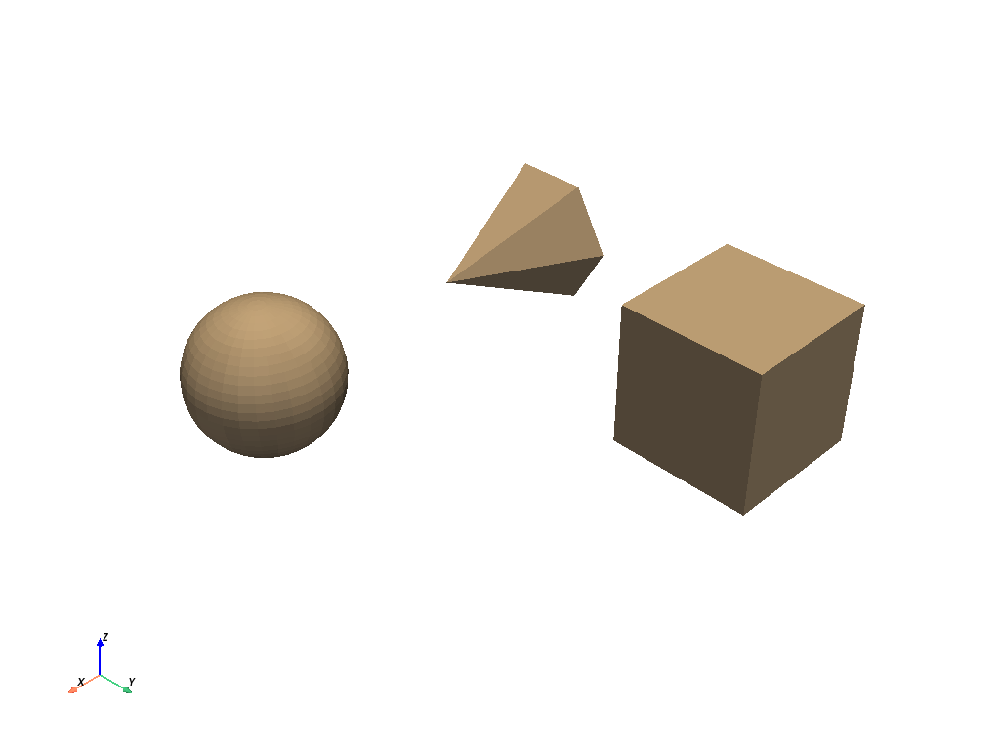
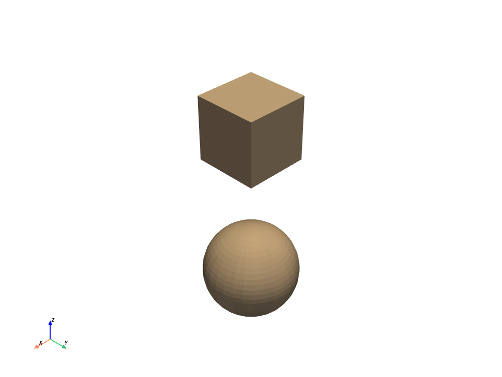

pyvista.MultiBlock#
- class MultiBlock(*args, **kwargs)[ソース]#
A composite class to hold many data sets which can be iterated over.
This wraps/extends the vtkMultiBlockDataSet class so that we can easily plot these data sets and use the composite in a Pythonic manner.
You can think of
MultiBlocklike a list as we can iterate over this data structure by index. It has some dictionary features as we can also access blocks by their string name.バージョン 0.36.0 で変更:
MultiBlockadheres more closely to being list like, and inherits fromcollections.abc.MutableSequence. Multiple nonconforming behaviors were removed or modified.Examples
>>> import pyvista as pv
Create an empty composite dataset.
>>> blocks = pv.MultiBlock()
Add a dataset to the collection.
>>> sphere = pv.Sphere() >>> blocks.append(sphere)
Add a named block.
>>> blocks["cube"] = pv.Cube()
Instantiate from a list of objects.
>>> data = [ ... pv.Sphere(center=(2, 0, 0)), ... pv.Cube(center=(0, 2, 0)), ... pv.Cone(), ... ] >>> blocks = pv.MultiBlock(data) >>> blocks.plot()
 Instantiate from a dictionary.
>>> data = { ... "cube": pv.Cube(), ... "sphere": pv.Sphere(center=(2, 2, 0)), ... } >>> blocks = pv.MultiBlock(data) >>> blocks.plot()
 Iterate over the collection.
>>> for name in blocks.keys(): ... block = blocks[name] ...
>>> for block in blocks: ... # Do something with each dataset ... surf = block.extract_surface() ...
Methods
MultiBlock.append(dataset[, name])Add a data set to the next block index.
MultiBlock.as_polydata_blocks([copy])Convert all the datasets within this MultiBlock to
pyvista.PolyData.MultiBlock.clean([empty])Remove any null blocks in place.
MultiBlock.copy([deep])Return a copy of the multiblock.
MultiBlock.copy_meta_from(ido, deep)Copy pyvista meta data onto this object from another object.
MultiBlock.extend(datasets)Extend MultiBlock with an Iterable.
MultiBlock.get(index[, default])Get a block by its name.
MultiBlock.get_block_name(index)Return the string name of the block at the given index.
MultiBlock.get_data_range(name[, allow_missing])Get the min/max of an array given its name across all blocks.
Find the index number by block name.
MultiBlock.insert(index, dataset[, name])Insert data before index.
Get all the block names in the dataset.
MultiBlock.plot([off_screen, full_screen, ...])Plot a PyVista, numpy, or vtk object.
MultiBlock.pop([index])Pop off a block at the specified index.
MultiBlock.replace(index, dataset)Replace dataset at index while preserving key name.
Reverse MultiBlock in-place.
MultiBlock.set_active_scalars(name[, ...])Find the scalars by name and appropriately set it as active.
MultiBlock.set_block_name(index, name)Set a block's string name at the specified index.
Ensure that all nested data structures are wrapped as PyVista datasets.
Attributes
Find min/max for bounds across blocks.
Return the center of the bounding box.
Return
Truewhen all the blocks arepyvista.PolyData.Return the length of the diagonal of the bounding box.
Return the total number of blocks set.
Return the total volume of all meshes in this dataset.